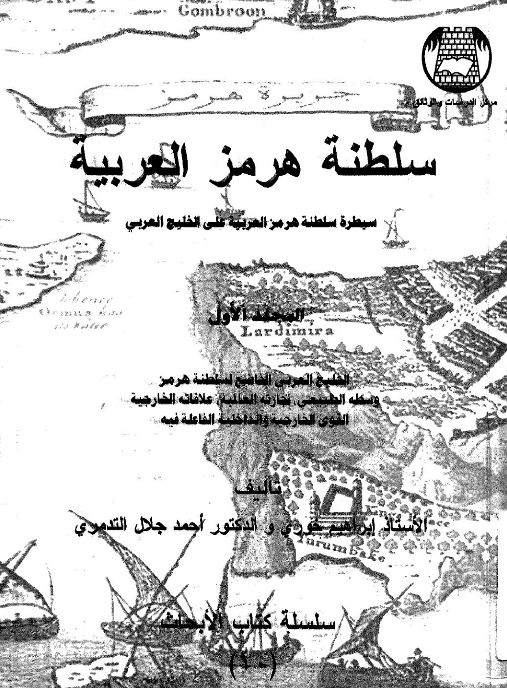
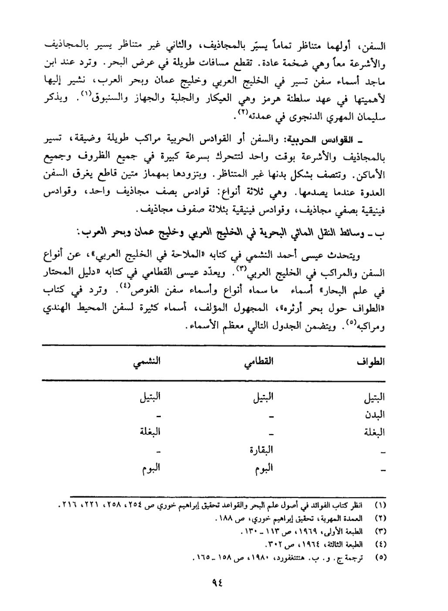

Book on the Arab Sultanate of Hormuz · Book pages, Ibrahim Khoury and Dr Ahmad Jalal Al-Tadmuri, Saltanat Hormuz Al-Arabiya, volume 1, Markaz Al-Dirasat wal-Wathaiq, Silsilat Kitab Al-Abhath
Eissa Al-Qatami’s Dalil Al-Muhtar used as a source on Arabian Gulf ship names
What it is
In the section on sea transport in the Arabian Gulf, the Gulf of Oman and the Arabian Sea, page 94 says that Eissa Al-Qatami, in his book «Dalil Al-Muhtar fi Ilm Al-Bihar», lists the names of ship types and of pearl diving boats (note 4: third edition, 1964, page 302). The authors then set his names beside those of Kitab Al-Tawaf and of Eissa Ahmed Al-Nashmi in a table: Al-Qatami gives Al-Batil, Al-Baqqara, Al-Boom, Al-Jalboot, Al-Sanbook, Al-Shu'i and Al-Kotiya. Page 95 notes that only the batil, the baghla and the jalboot match the names in Al-Qatami and Al-Nashmi. Page 345, the bibliography, lists «Eissa Al-Qatami, Kitab Dalil Al-Muhtar fi Ilm Al-Bihar, Kuwait 1964».
Why it matters
A history of the Arab Sultanate of Hormuz relies on Eissa’s book as one of its sources for the ships of the Arabian Gulf.
Page copies


Notes
Only the first pages are shown here. Family members who sign in can see all 4 pages.
Others named
Sources
Ibrahim Khoury and Dr Ahmad Jalal Al-Tadmuri, Saltanat Hormuz Al-Arabiya, volume 1, Markaz Al-Dirasat wal-Wathaiq, pages 94, 95 and 345
How this text was made: The year of publication is not on the pages sent.
Open in the interactive site